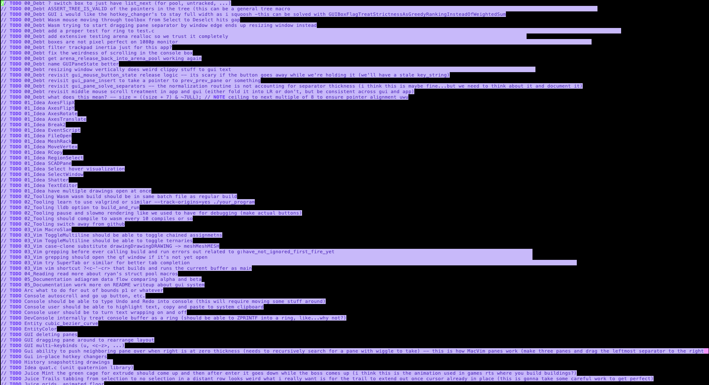

i've tried a lot of ways of keeping track of my TODO's and so far only one has even sort of worked
first, here's some approaches that didn't work for me
a) scattering the TODO's throughout the code -- they accumulate and become meaningless and overwhelming; plus they distract from explanatory comments
b) curating the TODO's in GitHub issues -- way too much friction; requires me to be connected to the internet; end up piling up and becoming meaningless
c) no TODO list (follow your heart 🥺) -- unfortunately, my heart is a dumb dumb (boring ideas never gets done, fun/stupid ideas always get started but rarely get finished)
and here's an approach that did work for me
- i have one file called todo.x and another file called done.x
- if i have an idea for something to do, i add it to todo.x, for example...
// TODO make a less exciting test_eso that doesn't require transforms, etc. (just draw the primitives yo)
- if i end up doing it, i replace TODO with DONE and move it to done.x
that's pretty much it, just a big 'ol list 🤷

one last thing: since marking the TODO as done and moving it over by hand is kind of frictious, i wrote a Vim mapping
now i just can press a lil hotkey combo and the TODO gets marked done and moved over and also we push to github with the body of the TODO as the commit message
the only downside i experienced using these String's was that the standard printf didn't know about them -- if you pass a non-null terminated one of these String's with %s, printf will just goes marching merrily off into the distance, looking for a 0 that may never come
i saw two ways around this (like always, there are probably more options than just these):
A) remember to add null-terminators whenever i wanted to print of sprint, or
B) bring your own printf
conventional wisdom has that option (B) is Bad and Hard, but conventional wisdom is basically always wrong, so let's go with option (B)
case 'S' : { // our custom String struct
String string = va_arg(va, String);
const char *p = string._;
unsigned int l = (unsigned int) string.length;
if (l) {
// NOTE this block (mostly) copy and pasted from case 's' i did need to
// change / add one important thing or else it did bad things beware copypasta
...
}
}
sidenote: while i was in the neighborhood, i made a small change to _internal_vsnprintf(...) -- i prefer my functions to just crash the program when they fail, rather than returning some number i'll forget to check for and then spend hours trying to debug the downstream effects of
int _internal_vsnprintf(...) {
...
// // NOTE (copied from the printf docs)
// \return The number of characters that COULD have been written into the buffer, not counting the terminating
// null character. A value equal or larger than count indicates truncation. Only when the returned value
// is non-negative and less than count, the result has been completely written.
B32 success = (1
&& (result >= 0)
&& ((size_t) result < maxlen)
);
if (!success) {
*((volatile S32 *) 0) = 0; // (crash)
}
return(result);
}
i like being able to easily delete lines and swap lines without having to think about C's syntax;
one useful family of tricks is to avoid syntactic "special cases" -- basically, the first and last of something should be styled just like the things in the middle
here's how i initialize structs
{
a,
b,
c, // <- i put a comma here (NOTE trailing comma in struct-initialization is valid C)
}
here's how i write an else-if ladder
if (0) { // <- i put an `if (0)` here (NOTE 0 is false)
} else if (...) {
...
} else if (...) {
...
} else if (...) {
...
}
here's how i write an AND chain
(1 // <- i put a `1` here (NOTE 1 is true)
&& ...
&& ...
&& ...
)
here's an example snippet from Conversation's source